Nonlinear Models
Problem 1 Reminder of feature transformation
Consider the following data set:
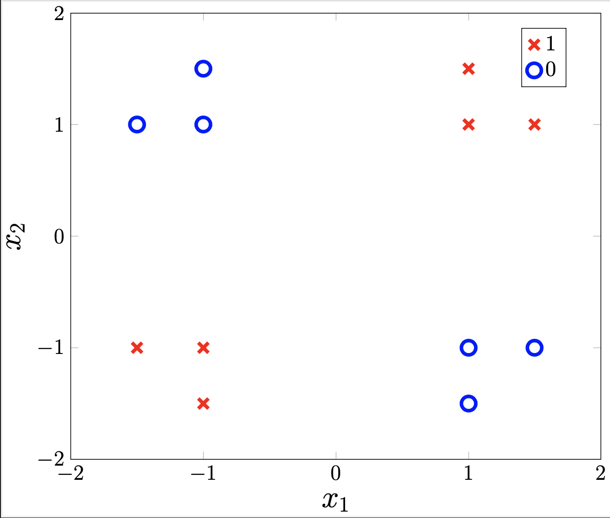
Assume that \(x^{(1)},\dots,x^{(n)}\) are the feature vectors for the points shown on the figure and
\(y^{(1)},\dots,y^{(n)}\) are the corresponding labels (for example, \(y^{(i)}=1\) for the "\(\times\)" points,
\(y^{(i)}=0\) for the "\(\circ\)" points).
By inspection, we can see that this training data set is not linearly separable.
We would like to design non-linear transformations such that the training data set becomes linearly separable.
a) Consider the feature transformation \(\phi_1 : \mathbb{R}^2 \to \mathbb{R}\) defined as \(\phi_1\left(x_1, x_2\right) = x_1x_2\). On the line below, plot where the original data points map to in the transformed space.
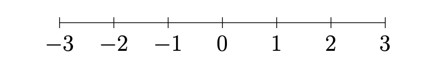
b) Define a hypothesis \(h_1(x; \theta, \theta_0) = \sigma(\theta \phi_1 (x) + \theta_0)\) that achieves 100% training accuracy.
Explanation: This transformation will differentiate between features that have the same sign (both \(+\) or \(-\)) vs. opposite signs. For the (red) data points in quadrants 1 and 3, \(x_1x_2 > 0\) while in quadrants 2 and 4 \(x_1x_2 < 0\). The transformed data will be linearly separable. In particular, we can see that a hypothesis defined by \(h_1(x) = \sigma (1 \phi_1(x) + 0)\) would achieve 100% training accuracy. To further minimize the negative log-likelihood function, we could increase \(\theta\) - depending on the presence of regularization.
c) On the plot below, shade the regions that would be labeled \(1\) by the hypothesis \(h_1\) from the previous part.
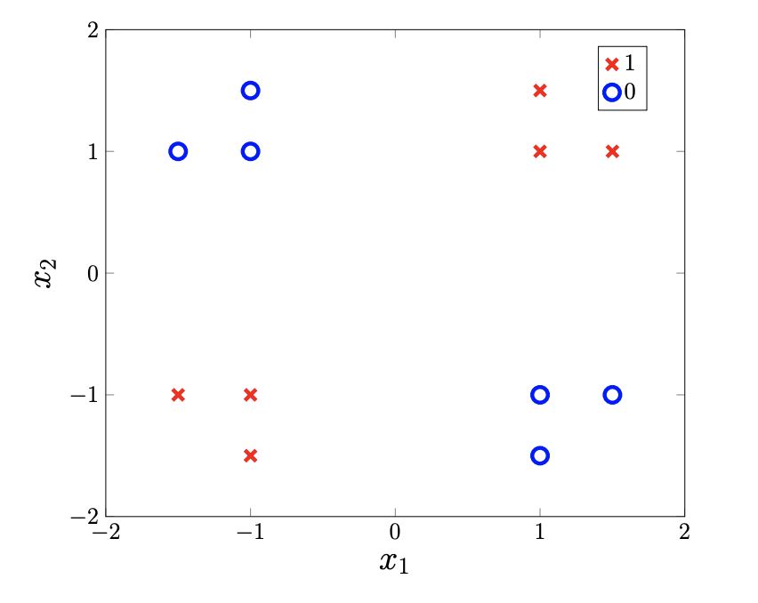
Answer:
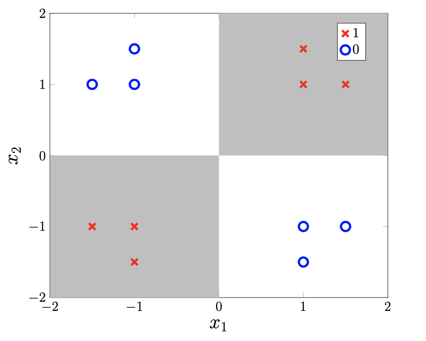
.The regions shaded in gray will be classified as a 1 while the rest will be classified as a 0.
d) Consider a new transformation \(\phi_2 : \mathbb{R}^2 \to \mathbb{R}\) defined as \(\phi_2(x) = x_1^2 + 2x_1x_2 + x_2^2.\) Will the training data set transformed by \(\phi_2\) be linearly separable?
Answer: Yes.
Explanation: Yes, here is what the transformed data looks like
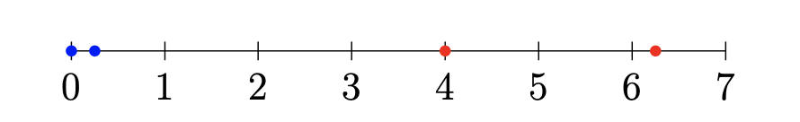
The same dataset can have multiple feature transformations that linearly separate it!
e) Consider the following computation graph:
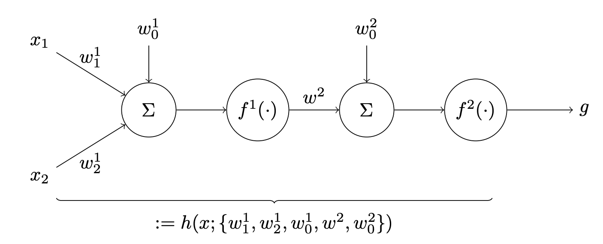
Write out the definition of the hypothesis visualized in the graph given above. Then, determine activation functions \(f^1,f^2\) and weights such that \(h_2(x) = \sigma(\theta \phi_2(x) + \theta_0)\), where \(\phi_2(x)\) is the same transformation from part d.
Explanation: From the computation graph, we can obtain the following formula:
In order for this model to mimic \(h_2(x) = \sigma(\theta \phi_2(x) + \theta_0),\) we would need:
- \(f^2(\cdot) = \sigma(\cdot)\)
- \(w^2 = \theta, w^2_0 = \theta_0\)
- \(f^1(\cdot) = (\cdot)^2\)
- \(w^1_1 = 1, w^1_2 = 1, w^1_0 = 0\)
f) Consider a new, related dataset shown below. Do the feature transformations you found previously linearly separate this dataset? If so, explain why. If not, find a new feature transformation \(\phi_3 : \mathbb{R}^2 \rightarrow \mathbb{R}\) such that the dataset is linearly separable using this feature.
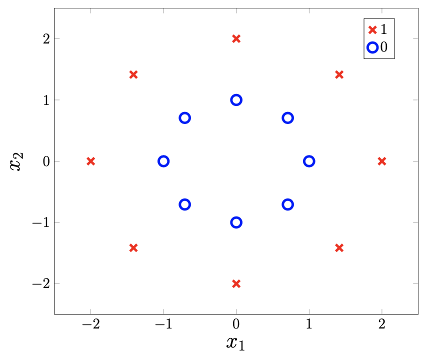
Explanation: \(\phi_1\) and \(\phi_2\) don't linearly separate this dataset! We can see \(\phi_1\) doesn't separate the classes and looking at the points on the line \(x_2=-x_1\), we see points from different classes can have the same \(\phi_2\) value.
Noticing the circular pattern of the data, we observe distance from the origin is a feature that linearly separates the dataset. We can use \(\phi_3(x_1,x_2) = x_1^2+x_2^2\) as this feature (which is 1 for the negative class and 4 for the positive class).
Problem 2 Computation graph
Suppose you are tasked with training a model to perform regression on a training data set \(\mathcal{D}_\text{train} = \{ (x^{(i)}, y^{(i)}) \}_{i=1}^n,\) where \(x^{(i)} \in \mathbb{R}^3, y^{(i)}\in\mathbb{R}\) for all \(i=1,\ldots,n\). As it turns out, linear hypotheses are not yielding sufficient results. Therefore, you would like to learn a feature transformation.
a) Draw a computation graph which meets the following specifications:
- The first layer contains 3 neurons with ReLU activation functions.
- The output layer contains a single neuron with the identity activation function.
Recall that weights in neural networks are represented as \(w^l_{n,m}\), corresponding to the weight in the \(l^{th}\) layer going from the \(n^{th}\) input neuron to the \(m^{th}\) output neuron. We represent the input to the \(l^{th}\) layer's activation function as \(z^l\) and the output of this activation function as \(a^l\).
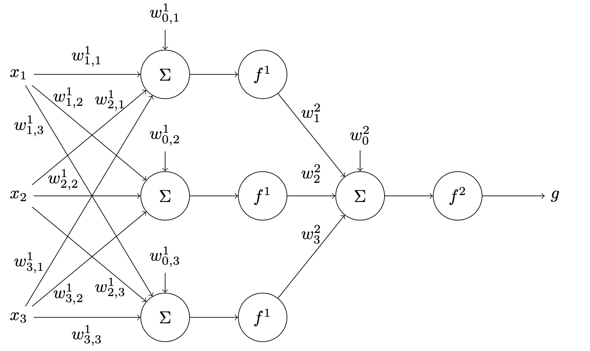
Here, \(f^1(z) = ReLU(z)\) and \(f^2(z) = z\).
b) Write out the function that defines the hypothesis from the previous part. In particular,
- The pre-activation of the first layer, \(z^1\), is a function of the input \(x\) and the weights \(W^1,W^1_0\).
- The post-activation of the first layer, \(a^1\), is a function of \(z^1\).
- The pre-activation at the output, \(z^2\), is a function of \(a^1\) and the weights \(W^2, W^2_0\).
- The output \(g = a^2\) is a function of \(z^2\).
Answer: \(W^1 \in \mathbb{R}^{3 \times 3}, W^1_0 \in \mathbb{R}^3, W^2 \in \mathbb{R}^3, W^2_0 \in \mathbb{R}\)
- \(z^1 = W^{1T} x + W^1_0\)
- \(a^1 = ReLU(z^1)\)
- \(z^2 = W^{2T} a^1 + W^2_0\)
- \(g = z^2 = W^{2T} ReLU(W^{1T} x + W^1_0) + W^2_0\).
c) Suppose that all of the weights and biases are initialized to 1. Consider a new data point \((x, y) = ([1,2,3]^T, 10).\) For the forward pass, what is the "guess," \(g = h([1,2,3]^T)\)? How does the guess compare to the actual label?
Explanation: In the forward pass,
- \(z^1 = \begin{bmatrix} 1 & 1 & 1 \\ 1 & 1 & 1 \\ 1 & 1 & 1 \end{bmatrix} \begin{bmatrix} 1\\ 2 \\ 3 \end{bmatrix} + \begin{bmatrix} 1\\ 1 \\ 1 \end{bmatrix} = \begin{bmatrix} 7\\ 7 \\ 7 \end{bmatrix} \)
- \(a^1 = ReLU(z^1) = \begin{bmatrix} 7\\7\\7 \end{bmatrix}\)
- \(z^2 = \begin{bmatrix} 1 & 1 & 1 \end{bmatrix} \begin{bmatrix} 7 \\ 7 \\ 7 \end{bmatrix} + 1 = 22.\)
- \(h([1,2,3]^T) = 22\)
The guess currently overestimates the actual label. Next week, we will see how to use backpropagation to reduce this error (i.e. learn better weights).
Problem 3
We are building a system to predict whether a customer will click on an ad. Our training data is made up of different types of features and collected over multiple days from a diverse age group of users. Our base features include:
- user_age: a numerical feature
- product_category: a feature with 10 distinct categories encoded as integers (e.g. electronics is encoded as
1, apparel is2, etc). - time_of_day: a cyclical numerical feature with hour resolution (0–23).
a) Now let's connect feature engineering to neural networks. Consider a one-node neural network (logistic regression) that takes our base features as input and produces a probability for ad click prediction.
Draw a diagram of this one-node neural network for ad click prediction. Include:
- Input layer with our base features (user_age, product_category, time_of_day)
- The linear combination step showing weights and bias
- The activation function
- The output probability for ad click.
Answer: Here's how the one-node network for ad click prediction should look:
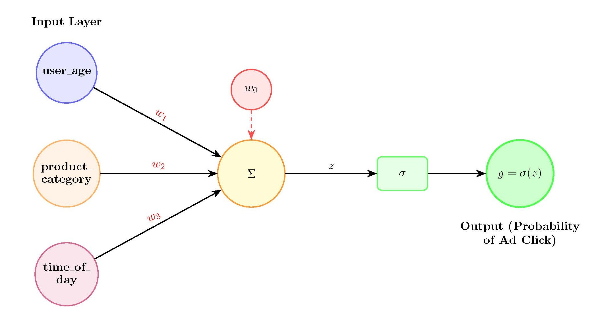
Explanation: Important Points:
- Input layer: Our base features (user_age, product_category, time_of_day)
- Linear combination: \(z = w_1 \cdot \text{user\_age} + w_2 \cdot \text{product\_category} + w_3 \cdot \text{time\_of\_day} + w_0\)
- Activation function: Sigmoid function \(\sigma(z) = \frac{1}{1 + e^{-z}}\)
- Output: Probability \(g = \sigma(z)\) for ad click prediction
This network takes our base features and learns weights to make the best possible prediction about whether a user will click on an ad.
b) We also transform the time_of_day feature to handle the cyclical nature of the data by mapping it onto a circle. Specifically, we transform it into two features:
\(\sin(2\pi \cdot \texttt{time\_of\_day}/24)\) and \(\cos(2\pi \cdot \texttt{time\_of\_day}/24)\).
Using the one-hot and trigonometric features, how should we change our network drawing? How many parameters (including the offset) are we learning in the one-neuron network?
Answer: Updated Network Drawing:
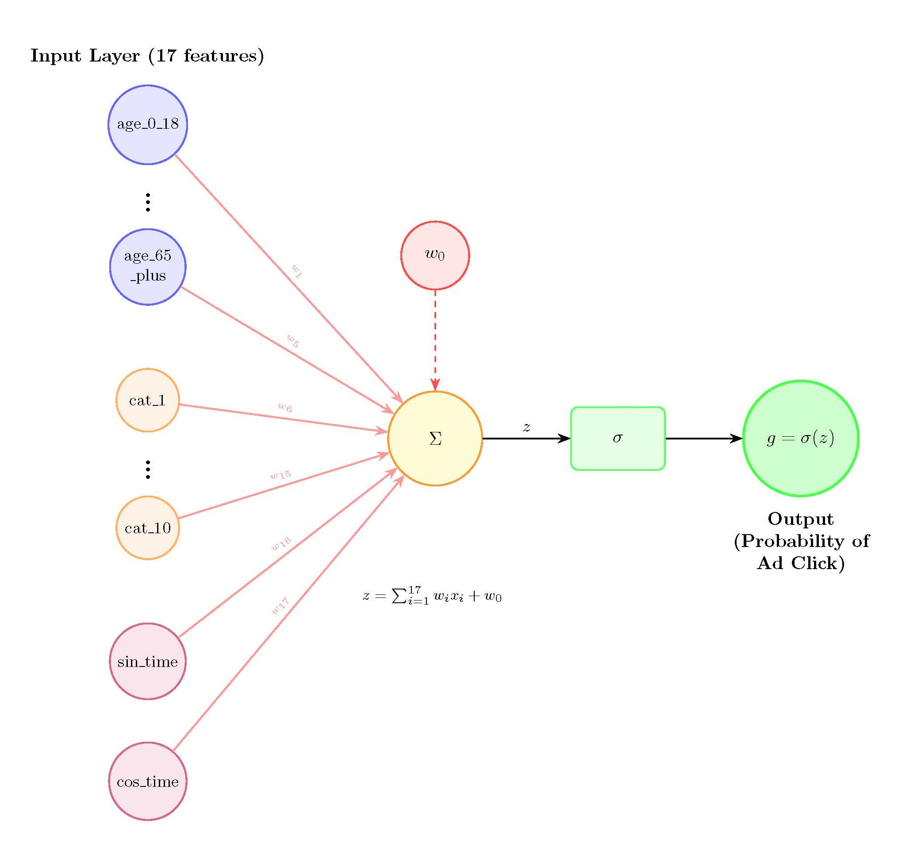
Explanation: The network drawing should be modified to show:
Input layer: Now has many more features:
- Age groups: 5 one-hot encoded features (age_0_18, age_19_35, age_36_50, age_51_65, age_65_plus) - created by binning the original user_age feature into 5 groups
- Product categories: 10 one-hot encoded features (electronics, apparel, books, etc.)
- Time features: 2 trigonometric features (sin_time, cos_time)
- Total: 17 input features
Linear combination:
Activation function: Sigmoid function \(\sigma(z) = \frac{1}{1 + e^{-z}}\)
Output: Probability \(g = \sigma(z)\) for ad click prediction
Number of Parameters:
- 17 weights (one for each input feature)
- 1 bias term (\(w_0\))
- Total: 18 parameters (including the offset)
Problem 4 Vanishing gradients
Kim's friend Jim thinks that Kim's neural network is pretty cool. However, he wants to make it even cooler by adding more layers! 96 more layers, to be exact. He uses ReLU activation functions for all hidden layers and an identity activation \(f(z) = z\) for the output layer.
Jim uses a training data \(\mathcal{D}_\text{train} = \{ (x^{(i)}, y^{(i)}) \}_{i=1}^n,\) where each \(x^{(i)}\) is a 1-dimensional feature and \(y^{(i)}\) is a 1-dimensional label. He uses a squared-error loss function for training the neural network. All of the weights and offsets will be initialized as \(w^l = .1\) and \(w^l_0 = 0.5\) for every layer \(l=1,\ldots,100\).
a) Consider computing the gradient of the mean squared-error with respect to the weight \(w^1\). What will we observe? What is the approximate size of the gradient?
Hint: first write the gradient w.r.t. \(w^{99}\), then \(w^{98}\), and see if you can find a pattern for the size of the gradient w.r.t. \(w^1\).
Explanation: We can see that the gradient will include multiplying by \((0.1)^{99}\), leading to the gradient essentially being zero. For example, consider \(\frac{\partial \mathcal{L}(g,y)}{\partial w^{99}}:\)
Then, for \(\frac{\partial \mathcal{L}(g,y)}{\partial w^{98}}\) (recall shared factors!):
As all of the layers are identical, the pattern continues and we can see that \(\frac{\partial \mathcal{L}(g,y)}{\partial w^{1}} = x \left(\Pi_{i=1}^{99} \frac{\partial \text{ReLU}(z^i)}{\partial z^i} w^{i+1} \right) \frac{\partial \mathcal{L}}{\partial g}\)
This is known as the "vanishing gradient" problem.
b) Jim decides to modify his neural network for training by including "residual connections". A new description of the computation is \(a^0 = x,~~~z^l = w^{l}a^{l-1} + w_{0}^l,~~~a^l = f^l(z^l) \underbrace{+ a^{l-1}}_{\text{residual}},~~~g=a^{100},\)
resulting in the computation graph below.
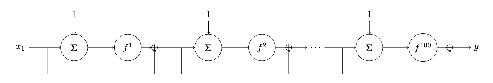
How might this improve the gradient computation for updating \(w_1\), compared to the previous part?
Hint: first write the expression of \(g\) in terms of \(x\) and the \(z^l\)s. Then, consider how the gradient will be computed by backpropagation.
Explanation: The residual connections help forward propagate the input to the output during the forward pass as
For any layer \(l\), the gradient \(\frac{\partial \mathcal{L}}{\partial w^l}\) includes a term of the form \(\frac{\partial ReLU(z^l)}{\partial w^l}\), which is not vanishingly small. In this way, the residual connections allow gradients to be backpropagated more directly to earlier layers in the network.
Problem 5 Expressivity of MLP
Let's see how a neural network with only a single layer and many neurons can approximate the function \(f(x) = x^2 - 1\) on the domain \(x \in [-1,1]\) using ReLU activation functions. Consider the graph on the left and a plot of the output \(g\) on the right:
|
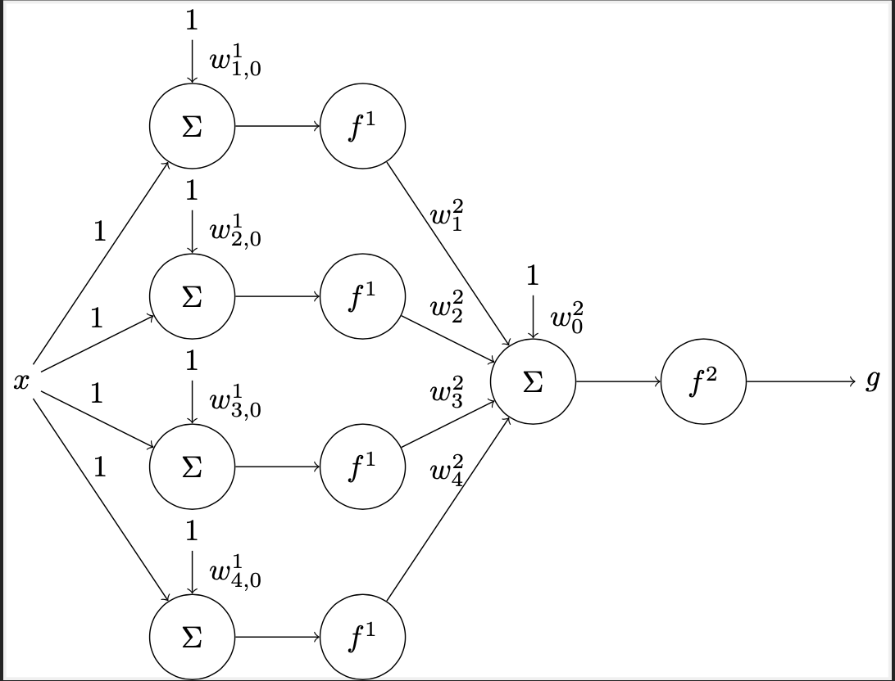
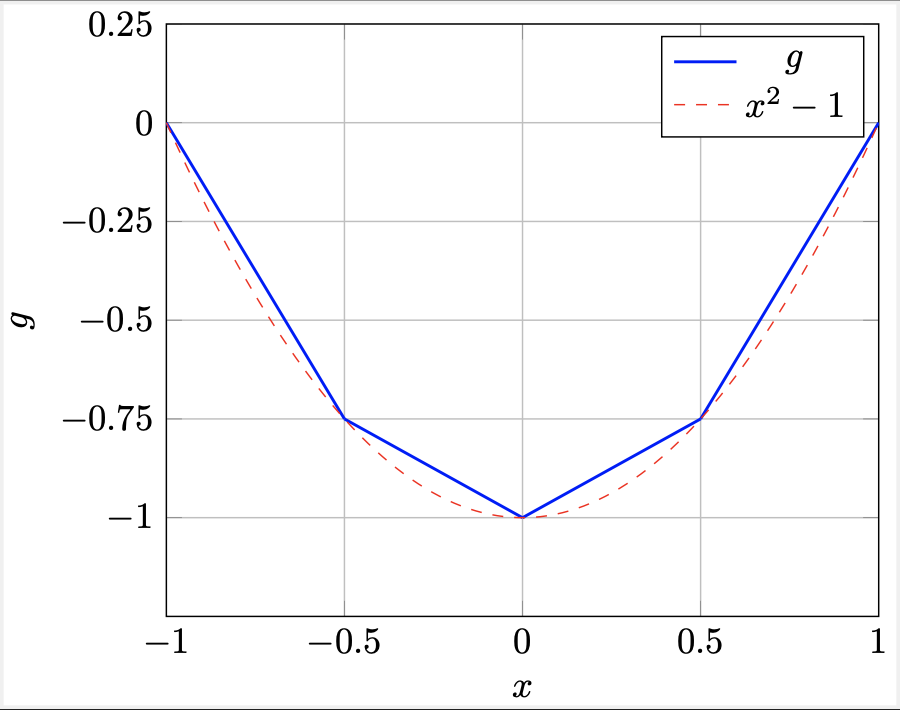
In the first layer, each of the activation functions are \(f^1(z) = \text{ReLU}(z) = \max \{0, z \}\). The neuron in the second layer uses an identity activation function \(f^2(z) = z\).
Note that the weights in the first layer are set to 1; we would like to determine values for the remaining weights and offsets to reconstruct \(g\) by assessing the four different paths through the neural network.
a) First, let's think about the regions \([-1,-0.5),[-0.5,0),[0,0.5)\) and \([0.5,1]\) individually. What offsets \(w^1_{i,0}\) for \(i=1,2,3,4\) can we use to delineate these regions? Assume that \(w^1_{1,0} > w^1_{2,0}> w^1_{3,0}> w^1_{4,0}.\)
Hint: consider the \(x\) gradually increasing from \(-1\) to \(1\), we want to make the neurons in the first layer to be ``activated'' one by one by setting the offsets appropriately. For example, when \(x \in [-1, -0.5)\), only the first neuron is activated; when \(x \in [-0.5, 0)\), the first two neurons are activated; and so on.
Explanation: We can set the offsets as follows:
\(w^1_{1,0}=1, w^1_{2,0}=0.5, w^1_{3,0}=0, w^1_{4,0}=-0.5.\)
Let's see why this works. Suppose that you input \(x=-0.75\). In this case, the output from the first neuron will be non-zero, as \(\text{ReLU}(-0.75 + 1) = 0.25 > 0.\) The remaining neurons will not be activated.
How about input \(x=-0.25\)? In this case the first neuron will be activated: \(\text{ReLU}(-0.25 + 1) > 0\) and the second neuron will be activated: \(\text{ReLU}(-0.25 + 0.5) > 0\). The remaining neurons will not be activated.
This pattern of neurons activating is due to the ordering of the offsets as well as the weights in the first layer all being set to 1.
b) What value of \(w^2_1\) can we use to replicate \(g\) in the region of \(x\in[-1,-0.5)\)?
Explanation: With \(w^2_1=-1.5\), we can create the desired line segment for the region of \(x\in[-1,-0.5).\)
c) What value of \(w^2_2\) can we use to replicate \(g\) in the region of \(x\in[-0.5,0)\)?
Hint: think about which neurons in the first layer are activated when the input \(x\in[-0.5,0)\), and check the change in slope from the previous region to this one.
Answer: \(w^2_2=1\).
Explanation: \(w^2_2=1\); recall that in the region \([-0.5,0)\) we need to consider the contribution of the neurons 1 and 2 from the first layer. As we want the slope in this region to be \(-0.5\); \(w^2_1\) contributes \(-1.5\) so \(w^2_2\) need to add \(+1\).
d) Finally, determine the remaining weights in the second layer as well as the offset.
Answer: \(w^2_3 = w^2_4 = 1, w^2_0=0\).
Explanation: \(w^2_3 = w^2_4 = 1, w^2_0=0\)
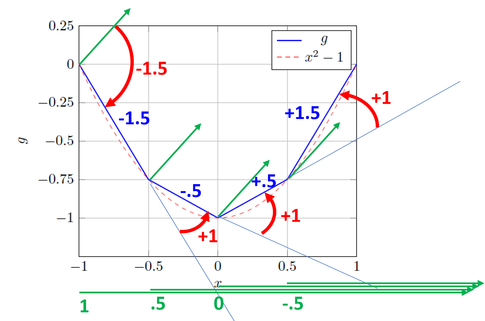
In the figure above, we piece everything together. Starting from the left (where \(x=-1\)) the green arrow within the grid denotes the slope of 1 from the output of the first neuron in the first layer (\(\text{ReLU}(x+1)\).) In red, the impact of the weight \(w^2_1 = -1.5\) is visualized, scaling the output of the first neuron such that it becomes a line segment with slope \(-1.5\).
The green arrow within the start at \(x=-0.5\) visualizes the output of the second neuron in the first layer. With a weight of \(w^2_2 = 1\), we can see the slope of \(g\) changes from the original \(1.5\) to \(-0.5\).
This pattern continues for the third and fourth neuron in the first layer, and the weights \(w^2_3\) and \(w^2_4\).
The green arrow below the grid indicated the regions where each of the neuron are "active" based on the value of the offsets in the first layer.
Problem 6 Somebody that I used to know
When Alex was first studying machine learning, he sometimes wondered about the relationship between linear regression, logistic regression, and neural networks. Is there actually any? For each of the neural-network architectures described below, help him identify whether it is equivalent to some previous model we have studied.
In each case, we will specify the number of layers, the activation function for each layer, and the loss function. In all cases, please assume that the last layer outputs a scalar. Let \(f\) be the activation function in a single-layer network, and let \(f^1\) and \(f^2\) be the activations in the first and second layers of a two-layer network, respectively.
a) Two layers, \(f^1\) is ReLU, \(f^2\) is identity (i.e., \(f(z)=z\)), loss is squared. Which of the following is this equivalent to:
- linear regression
- logistic regression
- a different kind of sensible neural network
- an ill-formed neural network
Answer: a different kind of sensible neural network.
Explanation: The ReLU takes us out of the world of linear and logistic regression into the more general world of nonlinear neural networks.
b) One layer, \(f\) is identity, loss is NLL. Which of the following is this equivalent to:
- linear regression
- logistic regression
- a different kind of sensible neural network
- an ill-formed neural network
Answer: an ill-formed neural network.
Explanation: Since the output of the last layer is a scalar, the output of the network is of the form \(w^T x + b\), where \(w\) is a vector of the same shape as \(x\) and \(b\) is a scalar. Then note that for \(w\neq 0\), \(w^Tx + b\) covers all of \(\mathbb R\). However, NLL is only defined for inputs in the interval \((0,1)\), so the network is ill-formed.
c) One layer, \(f\) is identity, loss is squared loss. Which of the following is this equivalent to:
- linear regression
- logistic regression
- a different kind of sensible neural network
- an ill-formed neural network
Answer: linear regression.
Explanation: As in the previous question, our model output is of the form \(w^T x + b\), which we readily recognize as a linear regression. Penalizing with a squared loss makes this a least-squares linear regression. The weights of our one-layer neural network are a linear regressor.
d) Two layers, \(f^1\) is identity, \(f^2\) is sigmoid, loss is NLL. Which of the following is this equivalent to:
- linear regression
- logistic regression
- a different kind of sensible neural network
- an ill-formed neural network
Answer: logistic regression.
Explanation: Since the output of the network is a scalar, the weight matrix in the second layer must be a vector of the same shape as the output of the first layer. We have that the whole network takes the form
Letting \(\theta = W_1^Tw_2\) (note \(\theta\) is a vector) and \(\theta_0 = w_2^Tb_1 + b_2\) (note \(\theta_0\) is a scalar), we can rewrite the network as \(\sigma\left(\theta^T x + \theta_0\right)\), which together with the NLL loss we recognize as a logistic regression.
Then in the reverse direction, starting with a logistic regression model \(\sigma\left(\theta^T x + \theta_0\right)\), we can take \(w_2 = \theta\), \(b_2 = \theta_0\), \(W_1 = I\), and \(b_1 = 0\) to get an output of the form
meaning this two-layer net can express any logistic regression model.
Since we can express any instance of logistic regression as an instance of this two-layer net and any instance of this two-layer net as an instance of logistic regression, we say that the two models are equivalent.
e) One layer, \(f\) is sigmoid, loss is NLL. Which of the following is this equivalent to:
- linear regression
- logistic regression
- a different kind of sensible neural network
- an ill-formed neural network
Answer: logistic regression.
Explanation: As in previous questions, since the output of the neural net is a scalar, the net takes the form
which together with the NLL loss we recognize as a logistic regression with \(\theta = w\) and \(\theta_0 = b\) in our usual notation.
f) Two layers, \(f^1\) is sigmoid, \(f^2\) is sigmoid, loss is NLL. Which of the following is this equivalent to:
- linear regression
- logistic regression
- a different kind of sensible neural network
- an ill-formed neural network
Answer: a different kind of sensible neural network.
Explanation: Note that since the output of this network is a scalar, it takes the form
This network is sensible because its output is a scalar in the interval \((0,1)\) (the range of sigmoid), and the NLL loss is well-defined for any input in \((0,1)\). Then taking \(W_1 = I\), $b_1 = 0\(, \)b_2 = 0\(, and \)w_2 = [1, 0, \cdots, 0]^T$, we get an output of
a function which cannot be expressed via either a linear or logistic regression.
g) Two layers, \(f^1\) is sigmoid, \(f^2\) is identity, loss is NLL. Which of the following is this equivalent to:
- linear regression
- logistic regression
- a different kind of sensible neural network
- an ill-formed neural network
Answer: an ill-formed neural network.
Explanation: The weights in layer 2 can push the output outside (0,1), so NLL loss would be ill-suited and undefined for some outputs.
h) Two layers, \(f^1\) is sigmoid, \(f^2\) is identity, loss is squared loss. Which of the following is this equivalent to:
- linear regression
- logistic regression
- a different kind of sensible neural network
- an ill-formed neural network
Answer: a different kind of sensible neural network.
Explanation: This neural network takes the form \(w_2^T \sigma(W_1^Tx + b_1) + b_2,\) which leads to a class of functions different from both linear and logistic regression. The scalar output of this neural network is compatible with the squared loss, which takes arbitrary real-valued predictions. This architecture of neural network would be sensible for making a non-linear regressor. The final layer allows predicting any real number and optimizes with a sensible loss for any real number, and the first layer with sigmoid activation provides nonlinearity so that our regressor is not a simple linear function of the input.
Problem 7 c01
One of the key metrics of the success of a TV commercial is the number of new customers it brings. In this problem, we consider a regression problem to predict the number of new customers (y), where each commercial is represented by an input vector \(x = [x_1, x_2]^T\), where \(x_1\) is the number of production hours and \(x_2\) ∈ {0, 1} indicates whether the commercial has been previously aired (\(x_2\) = 1) or not (\(x_2\) = 0). The data visualization is provided below.
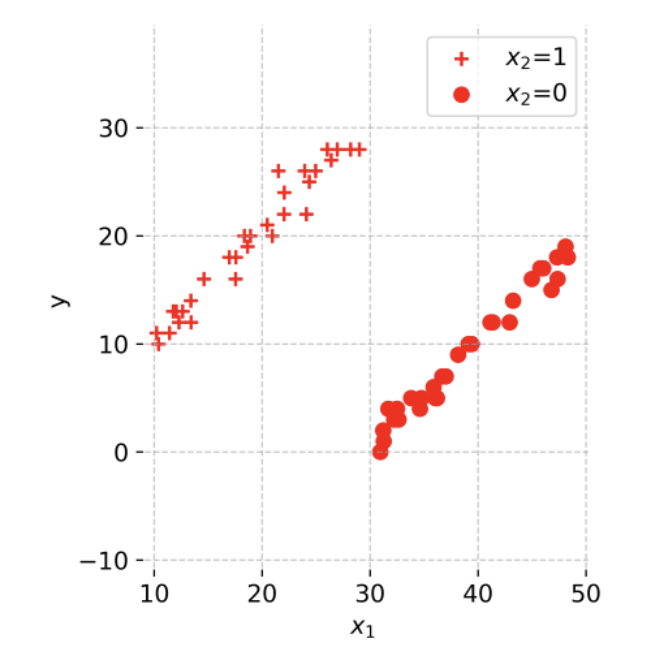
We would like to solve this problem by considering a neural network shown below, with 3 hidden ReLU units and a single linear output. The transformations are given below:
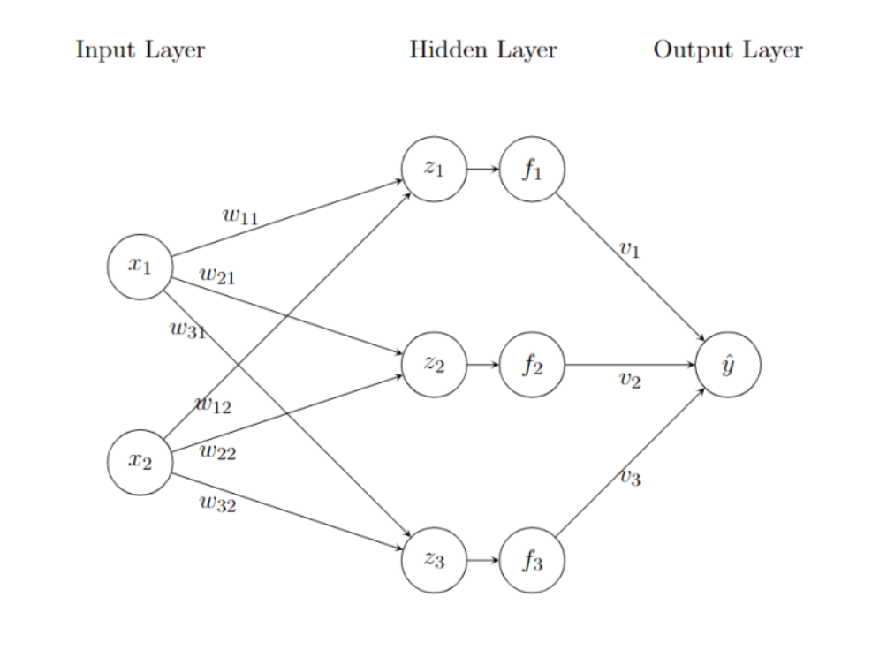
Given the transformations defined above, we can write them in vector form
$ z = \begin{bmatrix} z_1 \ z_2 \ z_3 \end{bmatrix} = Wx + b^{(1)}$
\(f = \begin{bmatrix} f_1 \\ f_2 \\ f_3 \end{bmatrix} ReLU(z)\)
\(\hat{y} = V f + b^{(2)}\)
where W, V are the weights of the network, and \(b^{(1)}, b^{(2)}\) are the biases and the ReLU function is applied element-wise. What are the dimensions of W, V, \(b^{(1)}, b^{(2)}\)? Write, e.g., U ∈ \(R^{3×6}\) if you would want to express that U were a matrix valued parameter of shape 3 × 6.
Answer: \(W ∈ R^{3×2}, b^{(1)} ∈ R^3, V ∈ R^{1×3}, b^{(2)} ∈ R^1\)